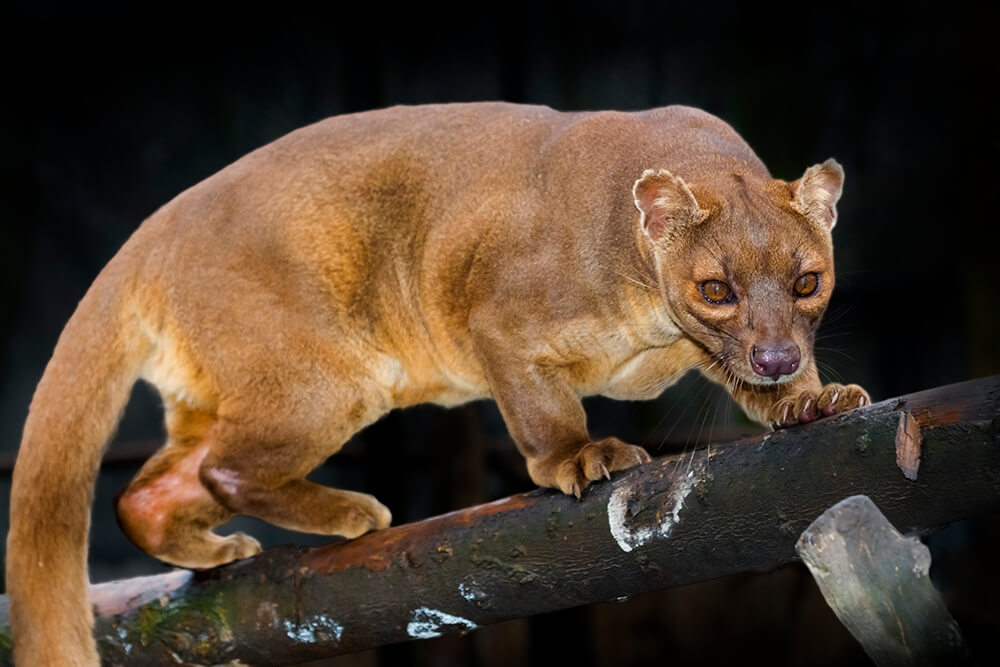
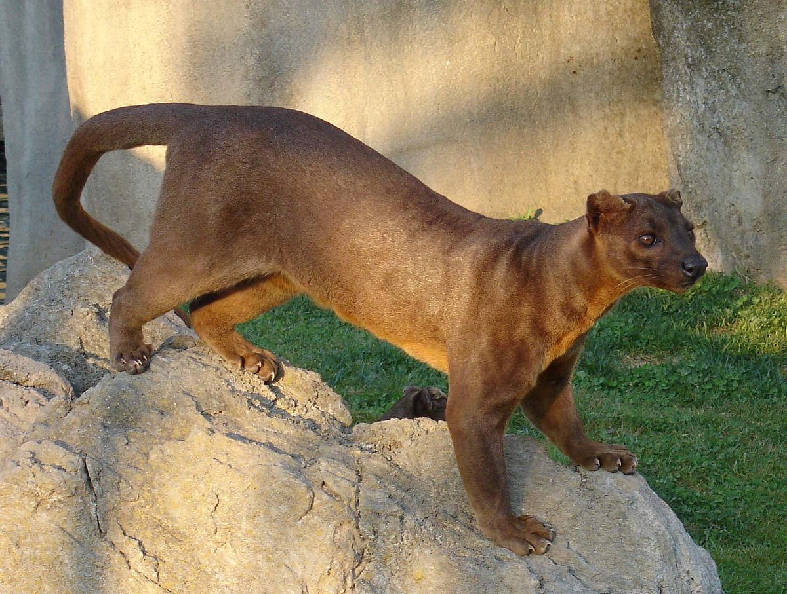
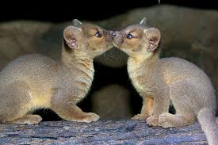
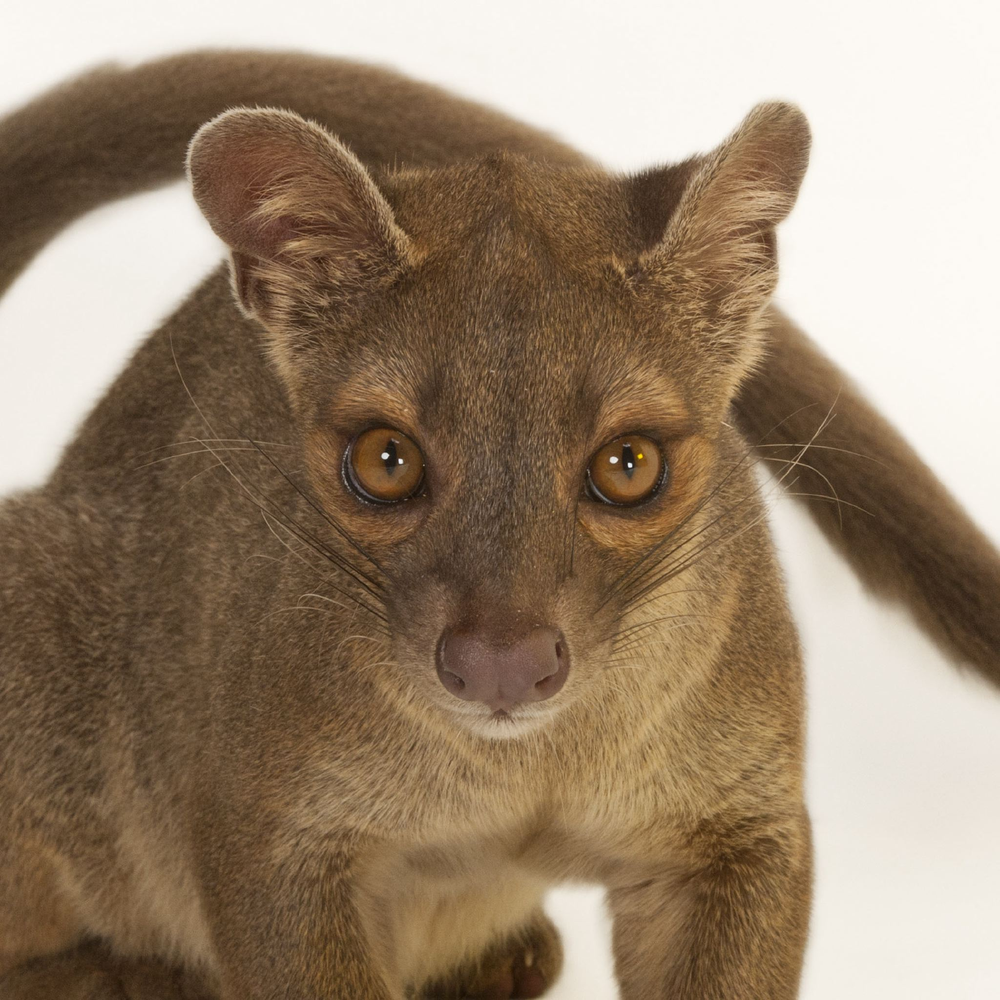
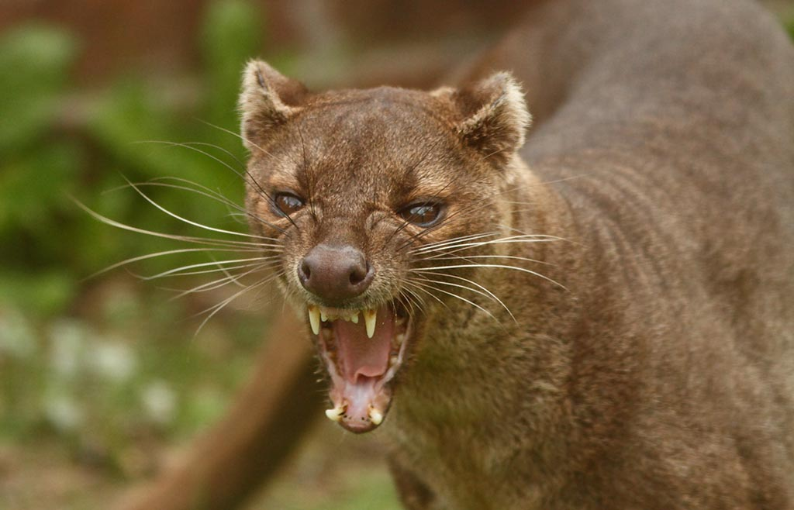
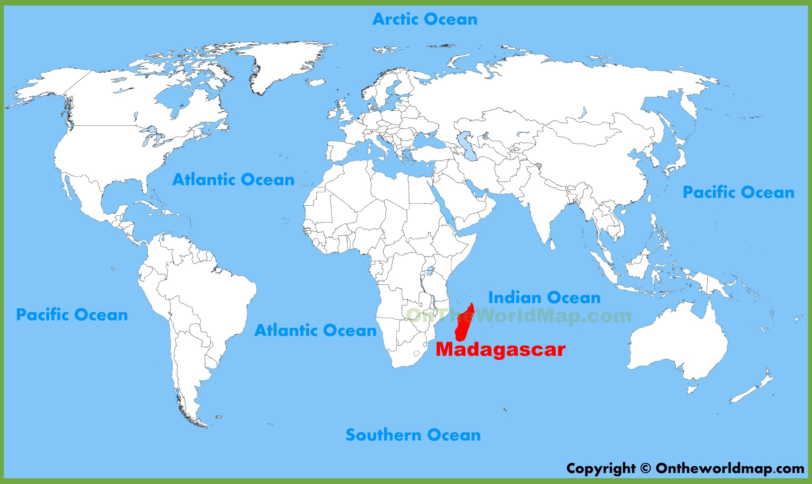

About the Fossa
The fossa is a carnivorous mammal. In fact, it is the largest carnivore in Madagascar! It has paws like a cat, a long tail like a monkey, and ears like a weasel. The fossa may look like many other creatures but it is most closely related to the mongoose and civet. Fossas usually have rich brown coats and a light underbelly. Their lifespan is unknown in the wild but they can live up to 20 years in captivity. Female fossas weigh 12-15 pounds and male fossas weigh 13-19 pounds. Fossas are usually 27-31 inches long, not including their tail which can be 26-28 inches long. The fossa's tail makes up about half of it's length! Their long tail helps these agile animals swing on trees. Fossas jump from branch to branch using their retractable claws, similar to cat claws. The fossa prefers trees, but it can run flatfoot like a bear. The fossa naps and hunts during the day. They can travel up to 16 miles a day. Fossas are very good hunters. They hunt things like mice, birds, and wild pigs. Lemurs are their main food source, though. It is the only predator in Madagascar that can catch the quick lemur. Fossas are very solitary animals, but they leave scents to keep track of other fossas. There is much more to learn about the fossa and scientists are still discovering new things about them every day.
    
Myths About Fossas
Scientists do not know a lot about fossas because there aren't many of them and they live in live in remote areas that are heavily forested. They are also native only to the island of Madagascar, off the east coast of Africa. Locals pronounce the name "foo-sa" or "foosh". There are so many myths about this mysterious mammal. One tale says that the scent fossas leave behind kills poultry. Another myth says that the fossa creeps into homes and steals babies out of their cribs! Another myth says that fossas can lick a sleeping person in a way that causes them to go into a deep trance. This spell cannot be broken and the person has become a victim to the fossa. These myths may seem silly but they do reflect on the fossa's cunning and sneaky nature. 
Why is it Endangered?
Fossa's population has been decreasing over the years, which is why it is endangered. The fossa has no natural enemies in Madagascar, but the lack of trees has been hurting the species. The animal needs trees to hunt and survive. Humans are also a reason this species is in danger. People see them as a pest because they sometimes attack livestock. This species needs humans to help it survive.